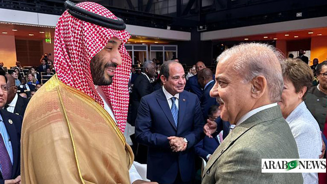

Pakistani PM meets Saudi Arabia's crown prince on sidelines of Paris summit
Image Credits https://www.arabnews.pk/node/2326166/pakistan
A meeting between Pakistani Prime Minister Imran Khan and Saudi Arabia's crown prince Mohammed bin Salman on the sidelines of the Paris summit on climate change has raised many eyebrows and speculations. The event drew significant attention due to the timing of the meeting and its implications on the Pakistani-Saudi relations. This meeting also comes at a time when the Saudi monarchy is facing intense criticism from the international community due to its role in the Yemen war and the assassination of journalist Jamal Khashoggi.
Why is this meeting significant?
The meeting between Prime Minister Imran Khan and Crown Prince Mohammed bin Salman signifies the growing importance of Pakistani-Saudi relations in the region. Saudi Arabia has been a strong ally of Pakistan for decades and has provided significant financial and political support to the country. This meeting was an opportunity for both leaders to discuss bilateral cooperation in various areas of mutual interest such as trade, investment, and energy. This meeting may also have implications on the regional security situation, particularly in the Gulf and South Asia.
Examples of Pakistani-Saudi cooperation
The relationship between Pakistan and Saudi Arabia is based on shared political, economic, and strategic interests. Saudi Arabia has been a crucial partner in Pakistan's economic development, particularly in the energy sector. Saudi Arabia has invested in various energy projects in Pakistan, including the construction of oil refineries, power plants, and exploration of oil and gas fields. The two countries have also cooperated in the defense sector, with Saudi Arabia providing significant military aid and support to Pakistan.
Some of the recent examples of Pakistani-Saudi cooperation include:
Saudi Arabia's investment in Pakistani oil refineries
In 2018, Saudi Arabia's state-run oil company, Aramco, signed an agreement with Pakistan to invest $10 billion in an oil refinery in Pakistan's southwestern province of Balochistan. The refinery is expected to have a production capacity of 250,000 barrels per day and will help reduce Pakistan's dependence on imported oil.
Pakistan's deployment of troops to Saudi Arabia
In February 2018, Pakistan announced that it would deploy its troops to Saudi Arabia to provide security to the kingdom's infrastructure and military installations. This move was seen as a demonstration of Pakistan's commitment to its strategic partnership with Saudi Arabia.
Case study: Pakistani-Saudi cooperation in the Yemen war
The Yemen war has been a key area of cooperation between Pakistan and Saudi Arabia. Since the conflict began in 2015, Pakistan has expressed its support for the Saudi-led coalition and has provided military and logistical support to the kingdom.
However, Pakistani politicians and civil society activists have expressed concerns about Pakistan's involvement in the conflict, particularly its impact on Pakistani security and domestic stability. There have been protests and demonstrations in Pakistan against the Yemen war, with many Pakistanis calling for an end to the country's involvement in the conflict.
Conclusion: The implications of Pakistani-Saudi relations
The meeting between Prime Minister Imran Khan and Crown Prince Mohammed bin Salman on the sidelines of the Paris summit on climate change has raised many questions about the future of Pakistani-Saudi relations. Some analysts see this meeting as an opportunity for Pakistan to play a bigger role in the region's security and to enhance its economic ties with Saudi Arabia. Others, however, view this meeting as a potential risk to Pakistan's image and security, particularly given the international criticism of Saudi Arabia over its role in the Yemen war and the Khashoggi killing.
In conclusion, Pakistani-Saudi relations are likely to remain a key factor in the region's political and security dynamics. While the two countries have enjoyed a strong partnership for decades, recent events have shown that this relationship is not without its challenges and complexities.
References:
- https://www.aljazeera.com/news/2021/9/1/pakistan-saudi-arabia-pm-mohammed-bin-salman-meet-in-paris
- https://www.reuters.com/world/middle-east/pakistans-pm-meets-saudis-crown-prince-france-2021-09-01/
- https://www.voanews.com/south-central-asia/pakistan-prime-minister-meets-saudi-crown-prince-paris-summit
Hashtags:
- #PakistaniSaudiRelations
- #ImranKhan
- #CrownPrinceMohammedbinSalman
- #ParisSummit
- #YemenWar
- #SaudiArabia
SEO Keywords:
Pakistani-Saudi relations, Imran Khan, Crown Prince Mohammed bin Salman, Paris summit, Yemen war, Saudi Arabia, regional security, military aid, economic development, oil refineries, energy sector, defense sector, regional dynamics, international criticism, political interests, strategic interests.
Article Category:
Politics, International Relations, Security, Strategic Affairs, Middle East, South Asia.
Curated by Team Akash.Mittal.Blog
Share on Twitter Share on LinkedIn